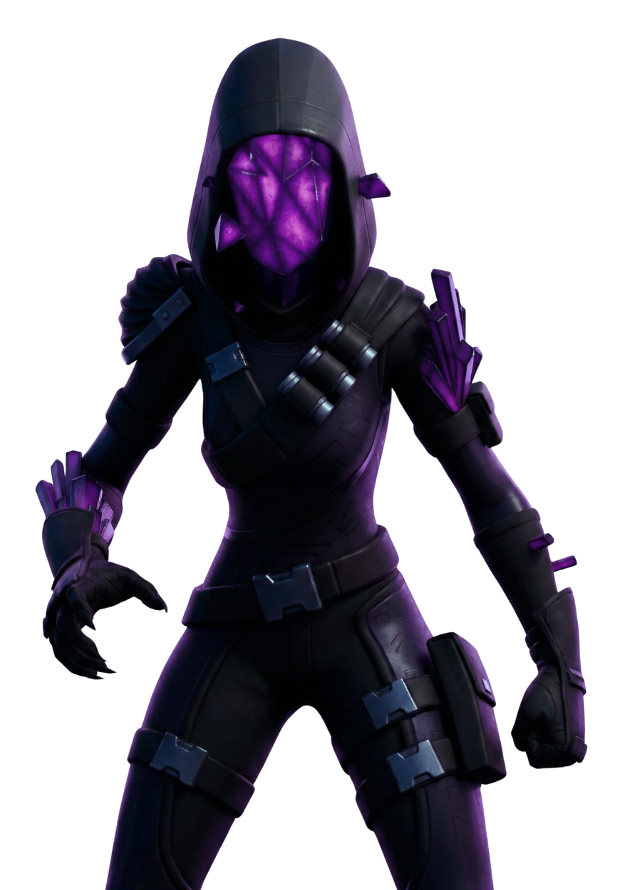
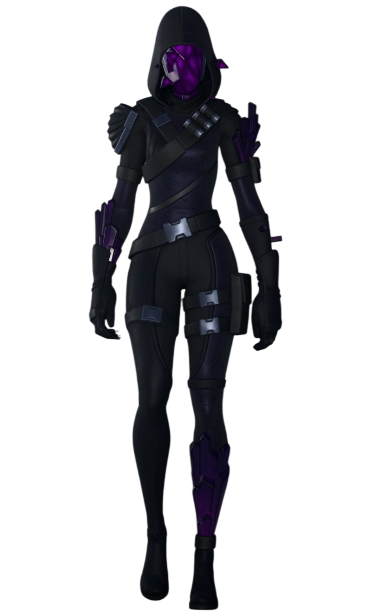

L'Exécutrice Cubique
// Archives Biographiques
Le Fléau d'Havrèque
Entité ténébreuse aux pouvoirs incommensurables, l'Exécutrice Cubique (surnommée la "sorcière" ou la "démone" par les survivants) est la manifestation d'une force corruptrice cosmique. C'est elle qui a mené l'assaut destructeur sur la mégapole d'Havrèque, le monde d'origine de Loper, Scarlet et Barret. Capable de manipuler une magie sombre et de corrompre tout ce qu'elle touche, elle a anéanti leur réalité, forçant Hiro à se sacrifier pour créer une brèche dimensionnelle et permettre à ses amis de fuir sa fureur.
L'Avènement sur Astéria
Attirée sur Astéria par les interactions du Clan du Soleil avec l'orbe du temple, l'Exécutrice a fait une entrée apocalyptique à la fin du Tome 2. Profitant d'une défaillance dans le dispositif à faille de la Faction Chaos, elle a surgi des ténèbres et pulvérisé les installations de l'Institut en un instant. Déchaînant une foudre sombre foudroyante, elle a calciné sur place les agents Sorana et Fusion, prouvant que rien, ni les armées, ni la technologie, ne peut entraver sa marche.
La Chute du Nouveau Monde
Usant de son énergie noire, elle a érigé une immense tour faite d'amalgames cubiques au centre de l'île pour canaliser la puissance du Point Zéro. Son but : ouvrir un gigantesque portail dimensionnel pour faire déferler sa propre flotte. Ce siphonnage extrême a provoqué la dislocation pure et simple d'Astéria, dont les fragments se sont mis à flotter dans le vide spatial. Bien qu'elle ait finalement été balayée par une onde de choc défensive du Point Zéro, l'Exécutrice a prouvé qu'elle était l'incarnation même de la destruction, prête à consumer l'omnivers tout entier.
// Variantes Visuelles
